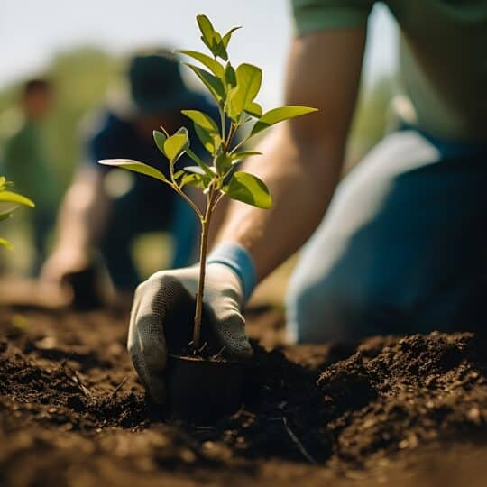

FAQ (Frequently Asked Questions)

Frequently Asked Questions (FAQ)
1. What is the purpose of Seeds of Tomorrow?
We work to protect and preserve tree seeds to ensure the survival of forests and ecosystems worldwide.
2. Why are tree seeds important?
Tree seeds are the foundation of forests, helping to regulate climate, support biodiversity, and provide essential resources.
3. How can my donation help?
Your donation supports tree seed collection, conservation efforts, and reforestation projects to restore ecosystems and fight climate change.
4. Where do the tree seeds come from?
We collect seeds from local forests, nurseries, and partners involved in reforestation and conservation.
5. How can I get involved?
You can volunteer, share our mission, or organize fundraising events to help spread awareness and support our efforts.
6. Are donations tax-deductible?
Yes, all donations are tax-deductible, and you will receive a receipt for your records.